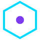

Running many agents in parallel tools for building multi-agent systems
Tools for running several agents at once and reviewing what each hands back. Of the 156 tools on our building multi-agent systems page, 16 fit this narrower job. By pricing: 12 open source, 2 source-available, 1 free or freemium, 1 pricing on the maker's site. The most-starred open repos here are Ruflo (80,231 stars), Oh My Claudecode (40,420 stars), Paseo (22,507 stars). Most come from the coding (9), frameworks (2), browser/computer use (2) categories.
Updated

Ruflo
Open-source multi-agent meta-harness for Claude Code, Codex, and MCP clients; Oct 13 release adds Mods (mission workflows) and a single control plane with human approval.
Added
Oh My Claudecode
Multi-agent orchestration layer for Claude Code that coordinates teams of specialized agents.
Added
Paseo
Orchestrate multiple coding agents from desktop and mobile.
Added
Kortix CompanyOS
Kortix CompanyOS is an open-source, cloud-native agent harness for companies: always-on agents start from schedules, webhooks, app events or team messages, run in parallel swarms on their own persistent cloud computers with shared company memory, connect to 3,000+ apps and land changes through team-approved reviews.
Added
Superset
Agentic IDE for orchestrating many coding agents in parallel.
Added
Cc Haha
Claude Code / AI Agent ： Agent 、Git Worktree、 Diff、 、 、Computer Use、 ； 、 、 H5 。 Local-first Claude Code / AI Agent desktop workspace: multi-agent teams, Git worktrees, diffs, skills marketplace.
Added
Agent Orchestrator
Runs and supervises teams of coding agents from planning to merge.
Added
ZCode
ZCode is Z.ai's open-source AI coding workspace and official harness for GLM-5.3, with a desktop app, web interface and terminal agent that run multiple agents on long goals, plus control from WeChat, Feishu or Telegram.
Added
DevSpace
DevSpace is an MIT-licensed local layer that lets ChatGPT, Claude, Grok Bot, OpenClaw and Hermes, acting as MCP hosts, open a workspace on your own machine, edit files, run tests and show a diff for review through a tunnel you control, and lets one coding agent hand work to others such as Codex, Claude Code, OpenCode, Cursor or Copilot as subagents in separate git worktrees, using the CLIs and subscriptions you already have.
Added
golutra
Multi-agent workspace that turns Codex, Claude Code and OpenClaw CLIs into one orchestrated team with parallel execution and task tracking.
Added
Maestro
Command center for orchestrating multiple coding agents.
Added
LayerFS
LayerFS is a filesystem built for running many coding agents in parallel. Each agent mounts a complete, writable workspace on top of shared committed history, does its work, commits what it changed and goes away, so compute only exists while a command runs. Every tool call becomes a commit on a branch, same-file clashes between agents are refused rather than silently merged, each line records the step that wrote it, and any commit can be forked at no cost for recursive exploration or RL training. Agents on different computers share one serverless store with chunk-level deduplication.
Added
Agent Swarm
Agent Swarm is a company agentic operating system for coordinating teams of agents across shared work.
Added
OpenSwarm
AI-first 'operating system' where swarms of agents run apps and browsers in parallel.
Added
Vicoa
Vicoa is an agent-native IDE for running Claude Code, Codex, Gemini and 40+ other coding agents in parallel, each on its own git worktree, from desktop, web or phone, with notifications when an agent needs you.
Added
Pisper
Multi-agent app for parallel sessions, tools, memory, workflows, desktop, terminal, and mobile.
Added
GitHub repos (16)
| Repo | GitHub stars | Licence | Last push |
|---|---|---|---|
| Ruflo ↗ | 80,231 | MIT | 2026-10-30 |
| Oh My Claudecode ↗ | 40,420 | MIT | 2026-10-30 |
| 22,507 | Apache-2.0 (third-party components under their own licences) | 2026-10-30 | |
| 20,592 | Elastic License 2.0 (not an OSI licence) | — | |
| Superset ↗ | 15,746 | Elastic License 2.0 (source-available) | 2026-10-30 |
| 15,236 | — | 2026-10-30 | |
| 13,908 | Apache License 2.0 | 2026-10-30 | |
| 8,378 | — | 2026-10-30 | |
| 5,450 | — | — | |
| golutra ↗ | 3,862 | — | 2026-05-12 |
| Maestro ↗ | 3,519 | GNU AGPL v3.0 | 2026-10-28 |
| LayerFS ↗ | 2,560 | — | 2026-10-28 |
| 1,025 | — | — | |
| 829 | — | 2026-10-03 | |
| Vicoa ↗ | 524 | — | 2026-10-30 |
Top 15 of 16 by stars. Stars and licence come from each repo, checked when the listing was last verified.
FAQ
What are the best AI tools for building multi-agent systems focused on running many agents in parallel?
We list 16. The first three by GitHub stars and featured status are Ruflo: Open-source multi-agent meta-harness for Claude Code, Codex, and MCP clients; Oct 13 release adds Mods (mission workflows) and a single control plane with human approval.; Oh My Claudecode: Multi-agent orchestration layer for Claude Code that coordinates teams of specialized agents.; Paseo: Orchestrate multiple coding agents from desktop and mobile.
Are there free or open-source options?
Yes: 12 open source, 2 source-available, 1 free or freemium, 1 pricing on the maker's site. Pricing is as each maker states it.
More from building multi-agent systems
Tools are grouped by what each says it does. Missing one? Submit it free.